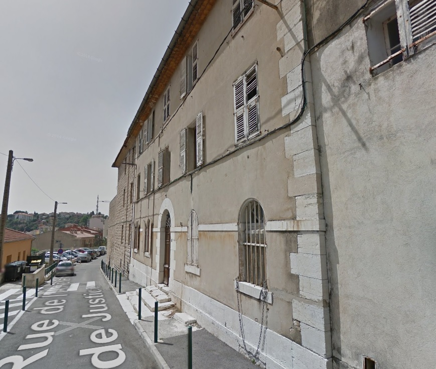
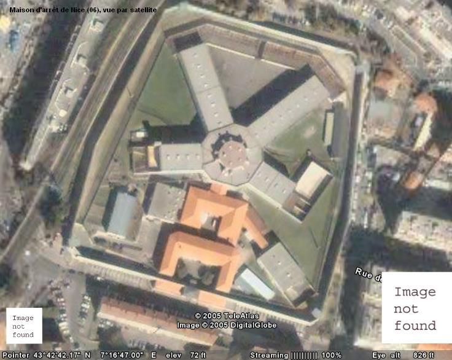
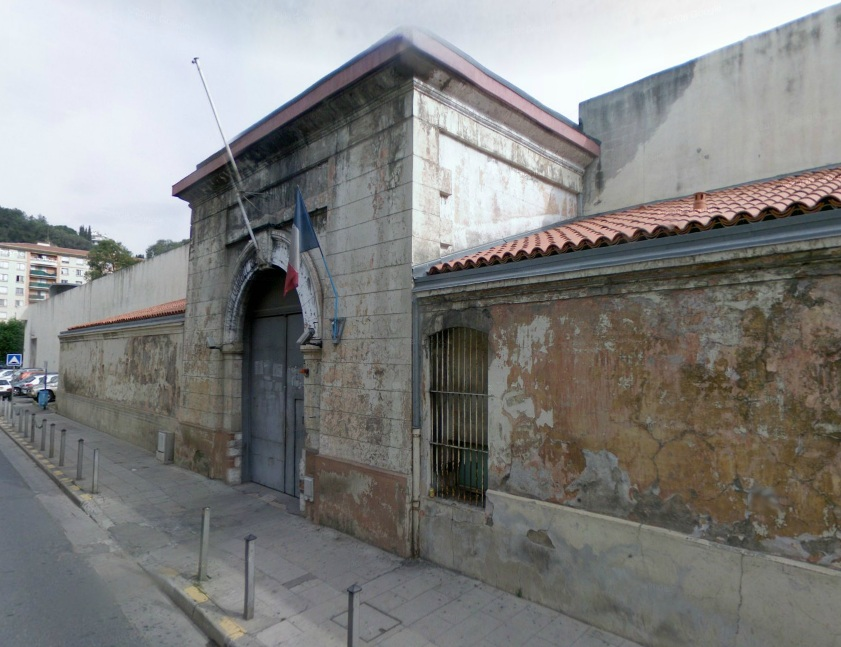
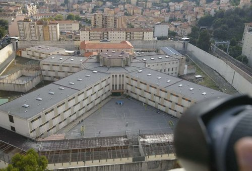
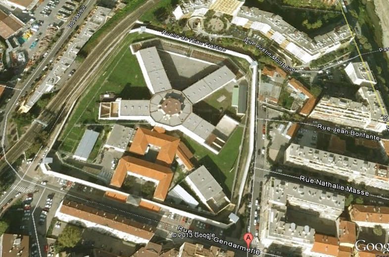
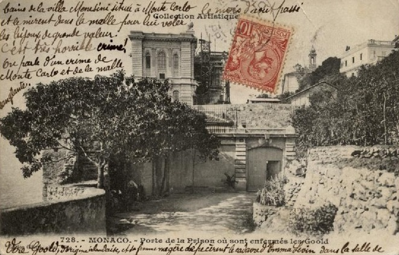

| Département | Images | Ville | Nom | Adresse | Période | Capacité | Histoire du lieu | Nombre d'exécutions |
| Alpes-Maritimes (06) |  |
Grasse | Maison d'arrêt | 20, rue de l'ancien Palais de Justice | 1847-1992 | 72 places, 18 surveillants (1962) | Petite maison d'arrêt jouxtant le tribunal de grande Instance - Grasse étant une sous-préfecture -, la prison de la capitale des parfums est restée en activité jusqu'aux années 1990, jusqu'à ce qu'on la considère comme trop petite et vétuste pour servir encore. Elle est désormais remplacée par une maison d'arrêt de 574 places, construite sur les hauts de la ville, mais qui connaît comme toutes les autres la surpopulation. Le vieux palais de justice, désaffecté à son tour en 2000 pour un nouveau bâtiment, sert de bâtiment annexe aux services municipaux. | Aucune exécution |
| Alpes-Maritimes (06) | Nice | Prison du Sénat | Ruelle du Malonat | 1614-1887 | Le bâtiment du Sénat - tribunal suprême - est construit en 1614, sur les ruines de l'ancien palais ducal détruit par un incendie quatre ans plus tôt. Les prisons, pour une raison de commodité, font partie intégrante des lieux : l'accès se fait en haut des escaliers de la ruelle. En 1848, avec la suppression du Sénat, l'endroit sert de cour d'appel, et historiquement, c'est à son entrée qu'en 1860, les Niçois furent informés des résultats des votes rattachant leur comté à la France. Trop petite, la prison est désertée sous Jules Grévy - même si la rue garde son nom de "rue des Prisons" jusqu'en 1899 - et sert d'asile de nuit au moins jusque dans les années 1950. | Aucune exécution | ||
| Alpes-Maritimes (06) |     |
Nice | Maison d'arrêt, de justice et de correction de "L'Arbre Inférieur" | 12, rue de la Gendarmerie | En service depuis 1887 | 220 places (1962) 331 places (2015) |
La prison en étoile de Nice, à sa construction, répondait à coup sûr aux attentes des habitants en matière pénitentiaire. Alors éloignée du centre-ville, proche de la gendarmerie - si pas du palais de justice, ouvert en centre-ville -, la prison, après 140 ans d'existence, a montré ses limites. L'urbanisation galopante l'a cernée d'immeubles, empêchant tout agrandissement, le taux d'occupation dépasse les 200% et les riverains se plaignent volontiers des nuisances - bruits, "visiteurs" se postant au pied du mur d'enceinte pour appeler les détenus... Sa fermeture semble inévitable, mais pour l'heure, aucun projet ne suscite l'enthousiasme : la commune voisine de Saint-Laurent-du-Var refuse d'accueillir la future maison d'arrêt, et les quartiers niçois disposant d'un terrain suffisamment vaste ne sont pas plus d'accord ! | Deux exécutions : 1923 et 1948. |
{kind=link}
{kind=link}
{kind=link}
{kind=link}
{kind=link}
| Pays | Images | Ville | Nom | Adresse | Période | Capacité | Histoire du lieu | Nombre d'exécutions |
| Principauté de Monaco |  |
Monaco | Maison d'arrêt | 4, avenue Saint-Martin | En service depuis 1865 | 90 places (1988) | La prison monégasque, en deux siècles, a changé deux fois d'emplaçement : d'abord sise dans le Palais Princier, elle déménage à la Restauration dans d'anciens entrepôts, mais leur configuration peu adéquate pour l'enfermement conduit à un dernier déplacement. Il existe en effet, depuis les années 1600, des fortifications donnant sur la mer, et qui comportent en particulier un bâtiment souterrain courant sous les jardins Saint-Martin. Son rôle d'abri pour la population de Monaco en cas d'attaque le rend presque inexpugnable, et propice à y installer la prison. En 1986, les bâtiments sont renovés, agrandis et divisés en quatre quartiers bien distincts : deux pour les détenus hommes, un pour les femmes, un dernier pour les mineurs. Un second chanter, durant les années 2000, améliore encore la partie administrative. La taille du pays, cependant, fait que la capacité maximale d'enfermement n'est jamais atteinte ! | Aucune exécution |
{kind=link}